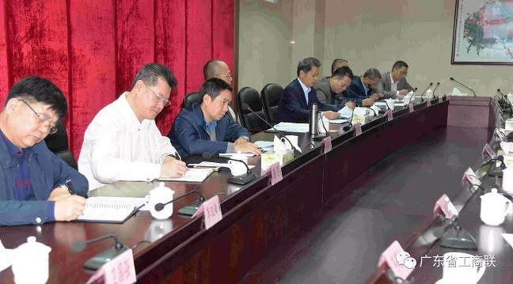
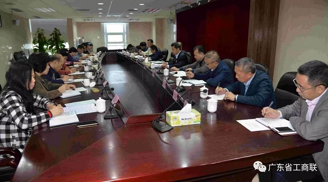
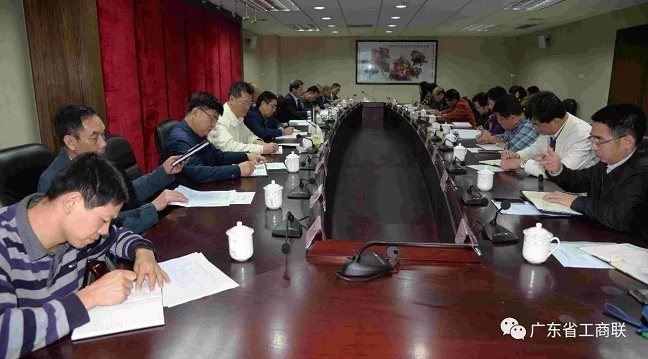

广东省工商联召开驻会主席办公会议 传达贯彻有

3月13日，省工商联召开驻会主席办公会议，传达学习中央加强新的社会阶层人士统战工作有关文件精神，传达贯彻省委常委会2017年工作要点，研究部署近期主要工作。省委统战部副部长、省工商联党组书记郭汉毅主持会议，省委第六巡视组组长张健生、副组长龚嘉明、副处长刘谦出席会议。

会议指出，要充分认识加强新的社会阶层人士统战工作的重大意义，切实提高思想认识，进一步增强做好新的社会阶层人士统战工作的责任感和使命感。新的社会阶层人士是建设中国特色社会主义事业的重要力量，要从全局和战略的高度，牢牢坚持“充分尊重、广泛联系、加强团结、热情帮助、积极引导”的方针，科学把握工作原则，明确目标要求，积极推动新的社会阶层人士统战工作，不断提升工作水平。
会议强调，一定要把思想和行动统一到中央决策部署上来，结合工商联实际，认真贯彻落实。一是要加强政治引领。发挥好党和政府联系非公有制经济的桥梁和纽带作用，加强对非公有制经济领域新的社会阶层人士的思想教育和舆论引导，强化意识形态工作，积极占领思想阵地，特别是利用新媒体做好宣传工作，继续开展好理想信念教育实践活动、新生代非公有制经济人士文明使者和广东省非公有制经济组织践行社会主义核心价值观示范点建设工作，统一思想，凝聚共识，团结和凝聚新的社会阶层人士为中华民族伟大复兴作出新贡献；二是要加强代表人士队伍建设。突出重点，加强调研，建立非公有制经济领域新的社会阶层代表人士数据库，加大实践锻炼和表彰激励力度，加强教育培训，将其纳入省工商联教育培训体系；三是要发挥商协会平台载体作用。加强对广东省职业经理人协会等商协会的指导，充分发挥沟通、协调、联系、服务的职能作用，建立一支优秀的职业经理人队伍；四是要加强非公有制企业党的建设。充分发挥省非公党委作用，依靠党的组织，通过团结引导、联谊交友等方式，统筹推进新社会阶层人士工作健康发展。

会议指出，2017年是实施“十三五”规划的重要一年和供给侧结构性改革的深化之年，全省工商联要全面贯彻党的十八大和十八届三中、四中、五中、六中全会精神，更加紧密地团结在以习近平同志为核心的党中央周围，锐意进取、艰苦奋斗，紧紧围绕两个健康工作主题，促进经济平稳健康发展和社会和谐稳定，为我省率先全面建成小康社会目标作出新贡献，以优异成绩迎接党的十九大和省第十二次党代会胜利召开。
会议要求，要认真学习贯彻落实省委决策部署，认真履行工商联职责，把省委的工作要求落到实处。一是要深入学习贯彻习近平总书记系列重要讲话精神和治国理政新理念新思想新战略。结合“两学一做”活动，继续抓好党组中心组学习、广东商会论坛等，通过开展专题学习增强和树牢“四个意识”特别是核心意识、看齐意识，确保思想上政治上行动上与以习近平同志为核心的党中央保持高度一致。二是要在保持经济持续平稳健康发展，推动非公有制经济发展上有新的作为。贯彻落实新发展理念，大力推动民营企业加大科技投入，实现转型升级；促进民营企业做大做强，继续做好中国民营企业500强申报工作和广东省百强民营企业评比表彰活动；加强政策宣传，引导更多民营企业参与国有企业混合所有制改革、政府PPP投资项目和军民融合发展；搭建平台，办好广东省民营经济国际合作商会，做好民营企业“走出去”服务工作。三是要推进全面深化改革。认真落实全国工商联有关改革部署，加强工商联所属商会改革工作，推进统战工作向商会组织有效覆盖，切实发挥商会服务企业、规范行业、助推产业的作用。四是要做好参政议政工作，推进社会主义民主政治建设。加强调研，开展制造业税费成本负担、促进粤东西北与珠三角产业共建、民营财产保护等重点问题调研，积极建言献策。五是加强思想政治引领，做好宣传思想文化工作。继续开展好理想信念教育实践活动、新生代非公有制经济人士文明使者和广东省非公有制经济组织践行社会主义核心价值观示范点建设等工作，加强非公有制经济人士思想阵地建设。六是坚持生态发展理念，加强生态文明建设。引导教育民营企业坚守环保法规，坚持绿色发展。七是加强对口帮扶，高度重视改善民生。继续推进“千企帮千村”工作，加大工商联对口帮扶贫困村力度，确保帮扶村三分之二的贫困户今年脱贫。八是加强民营企业法律服务，维护社会和谐稳定。继续做好民营企业投诉和劳资纠纷化解工作，营造和谐劳资关系，维护安全稳定。九是要进一步落实好管党治党的主体责任。省工商联党组要加强自身建设，利用省委巡视契机，完善各项制度，提高工作能力和水平。省非公党委要充分发挥作用，大力促进非公经济组织党建工作，发挥基层组织战斗堡垒作用，以党建促进我省非公有制经济健康发展。
省工商联驻会领导，部分轮值兼职副会长，省委统战部经济处和省工商联机关各部室（中心）主要负责人参加会议。
-
上一篇：暂无